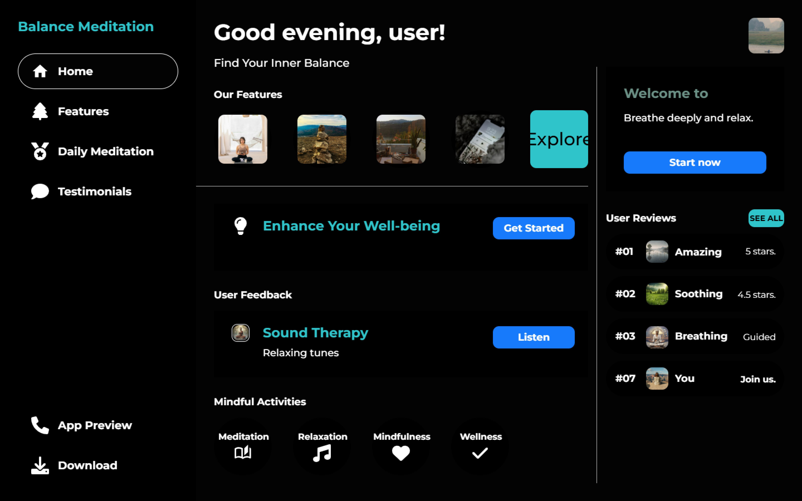
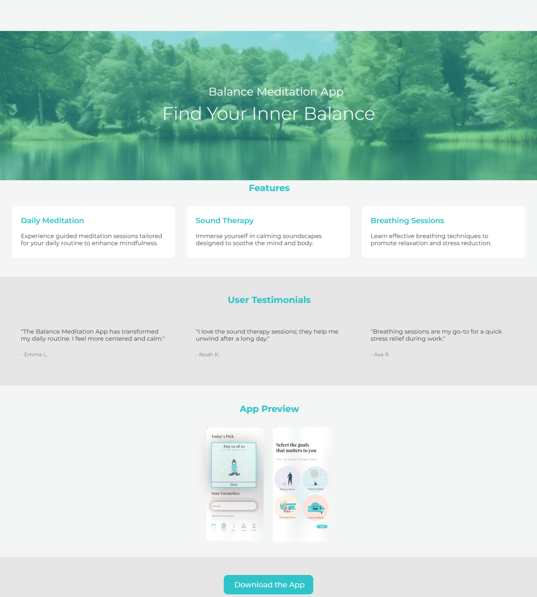
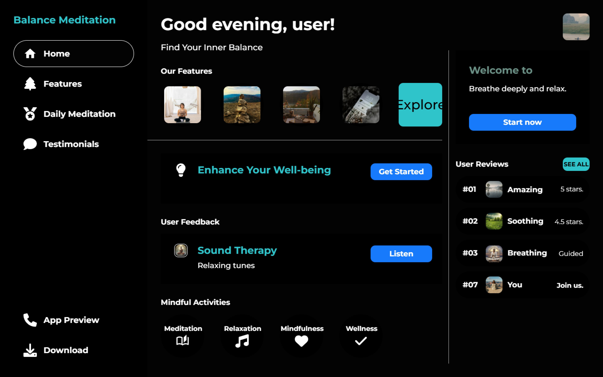
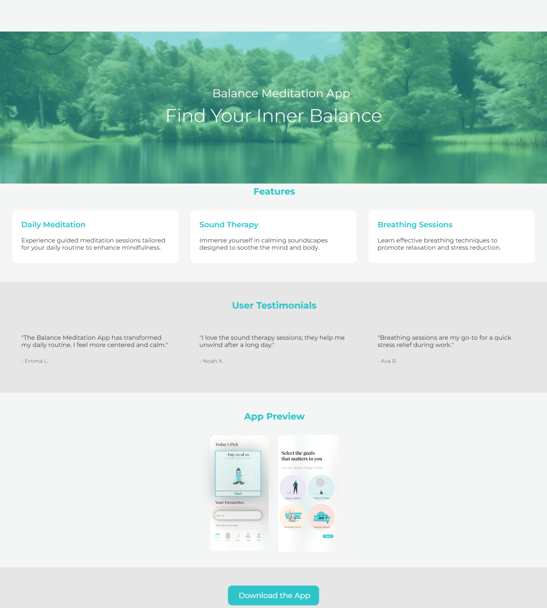

Balance App UI/UX Case Study
The Balance Meditation App redesign focused on **improving usability, visual flow, and engagement** while preserving its calming essence.
Through user research, we identified pain points and redesigned the experience to make it intuitive, minimal, and user-focused. This case study shows how thoughtful design can transform user interaction.

 


